作者QQ：（648437169）
点击下载➨Delphi支付宝支付 支付宝支付api文档
【Delphi支付宝支付】支持条码支付、扫码支付、交易查询、交易退款、退款查询、交易撤销、交易关闭、交易结算、账户转账、转账查询、对账单下载、SHA1WithRSA(RSA)和SHA256WithRSA(RSA2)签名与验签
用delphi做支付宝支付说实在坑有点多，网上资料太少，官网更不要去奢望有SDK，阿里在线技术客服很多的连delphi都没听说过，只能靠自己仿佛阅读API文档，该demo我大概用了有四五天的时间去写，特别是验签花费的时间太多了！
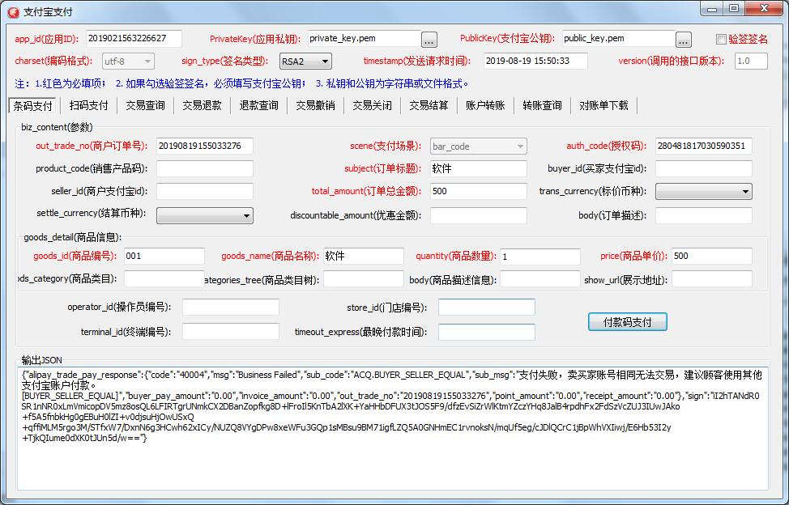
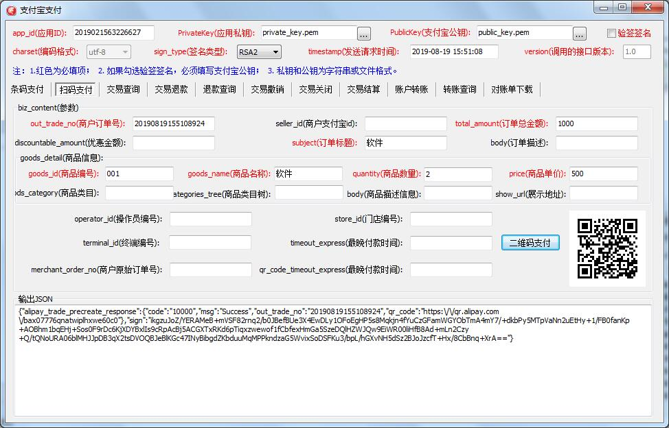
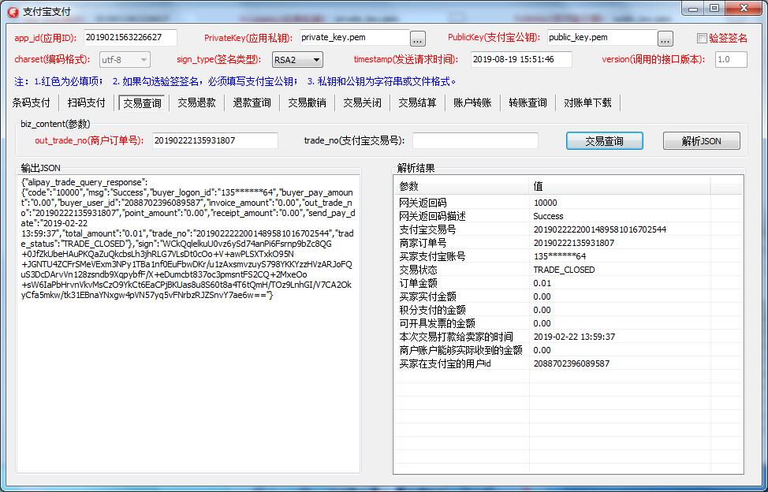
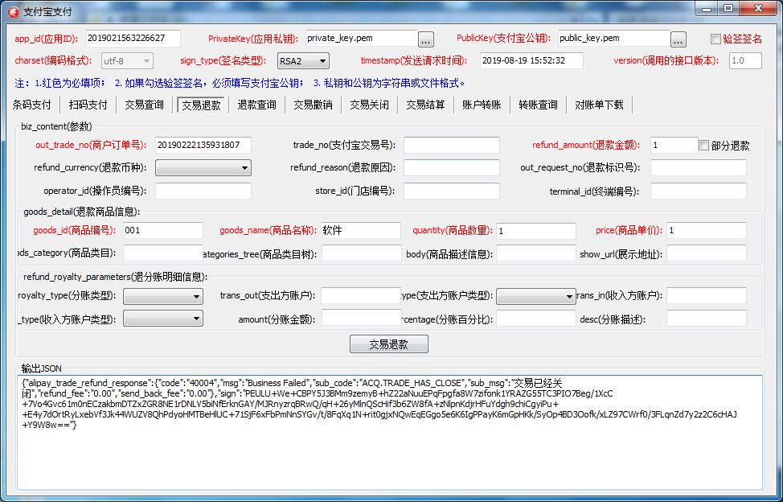
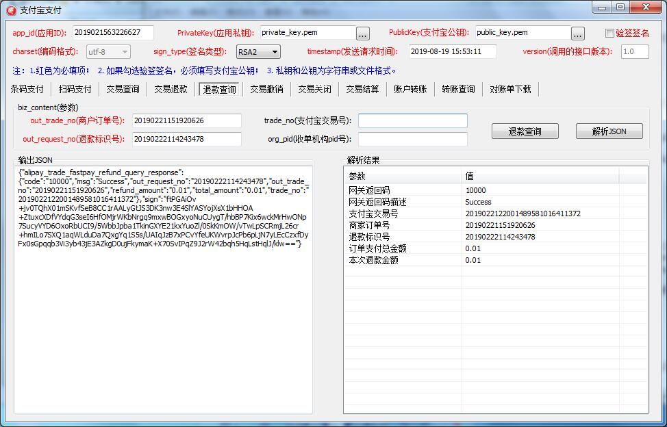
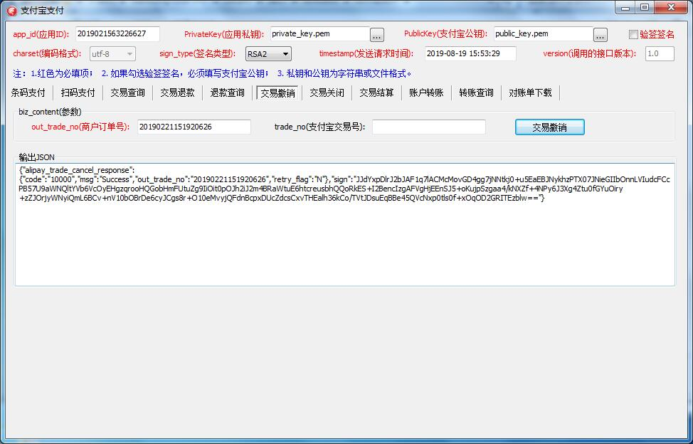
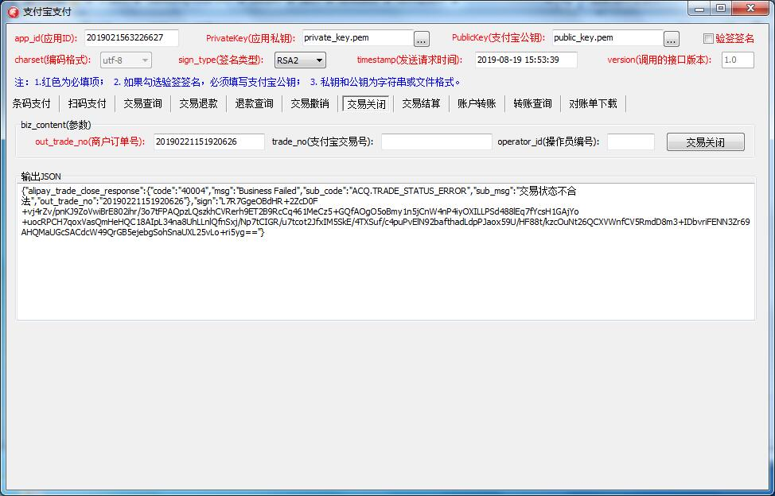
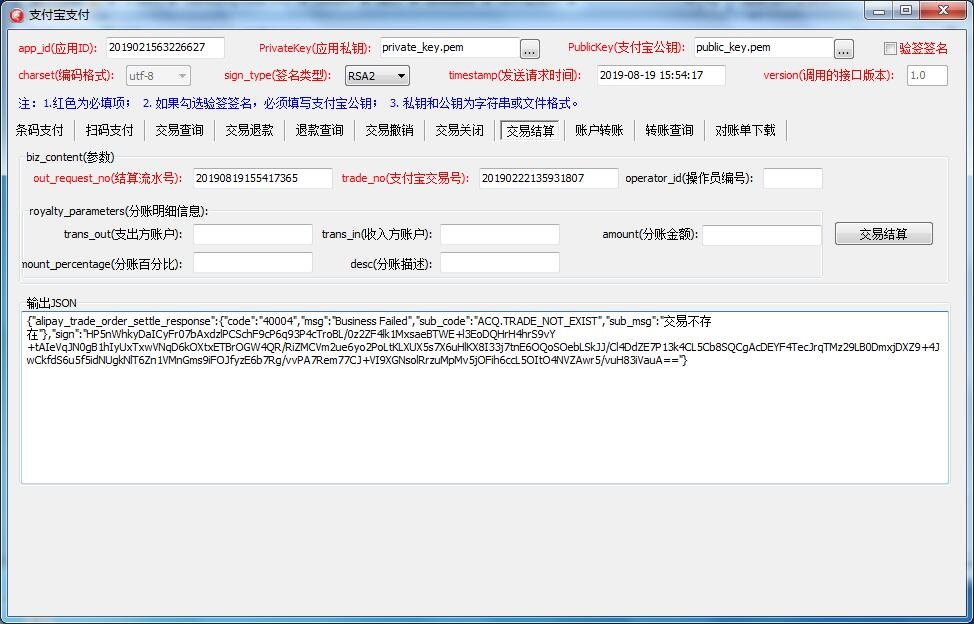
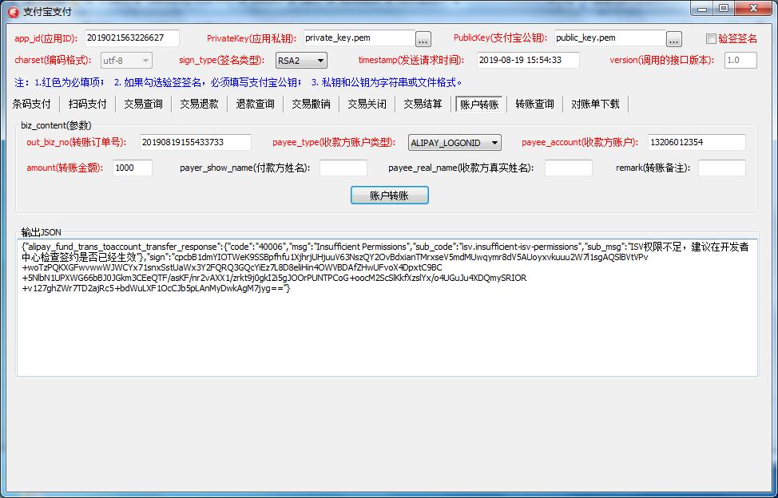
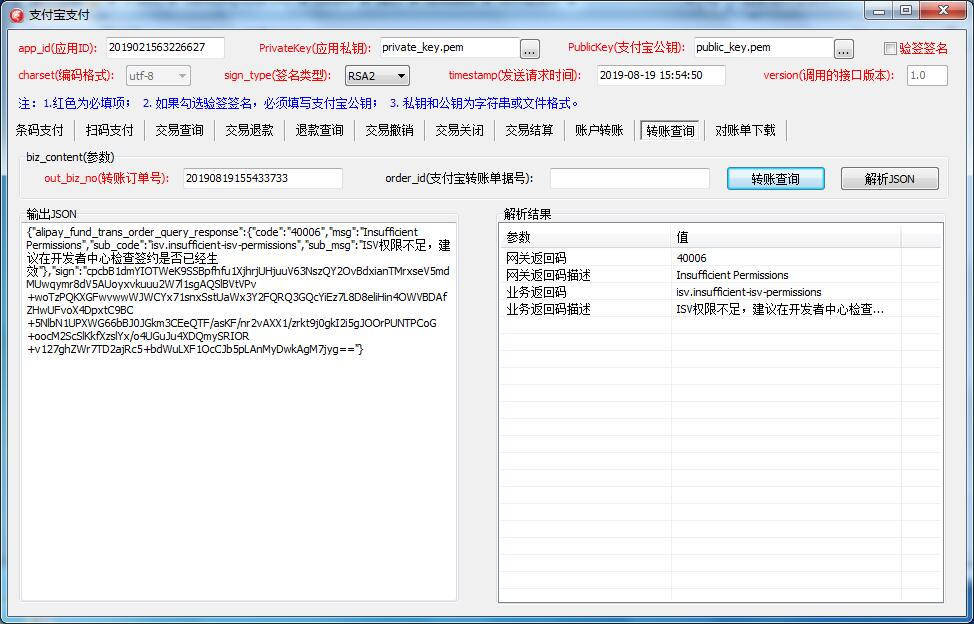
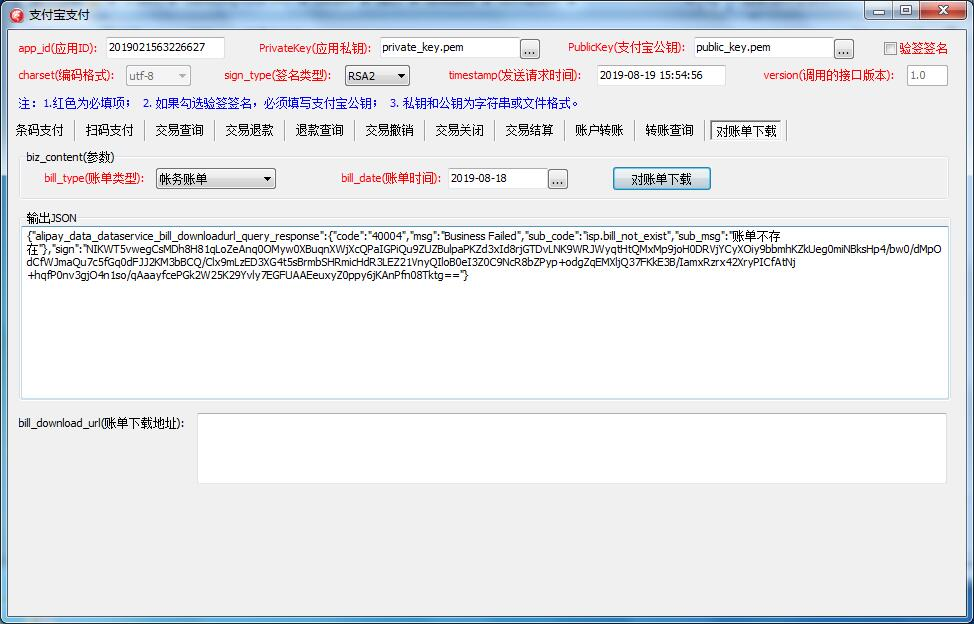